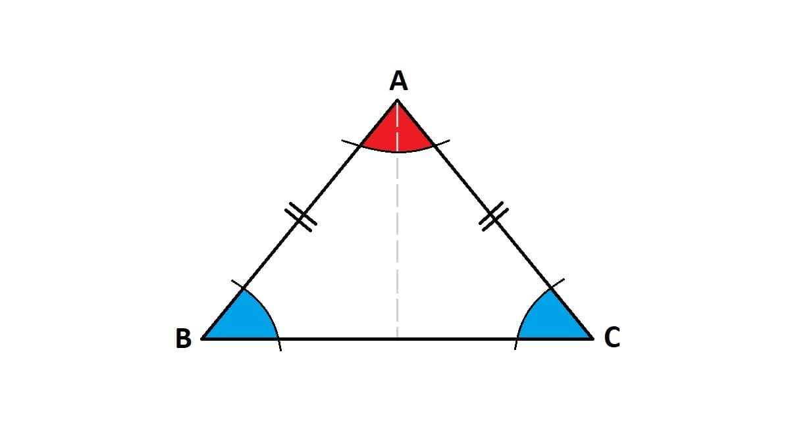

welcome to katik
Hai, Welcome to " Katik " website
disini kalian bisa melakukan perhitungan matematika, yaitu berupa bangun datar segitiga disini, yang terdiri dari inputan pilihan yaitu luas dan keliling segitiga
